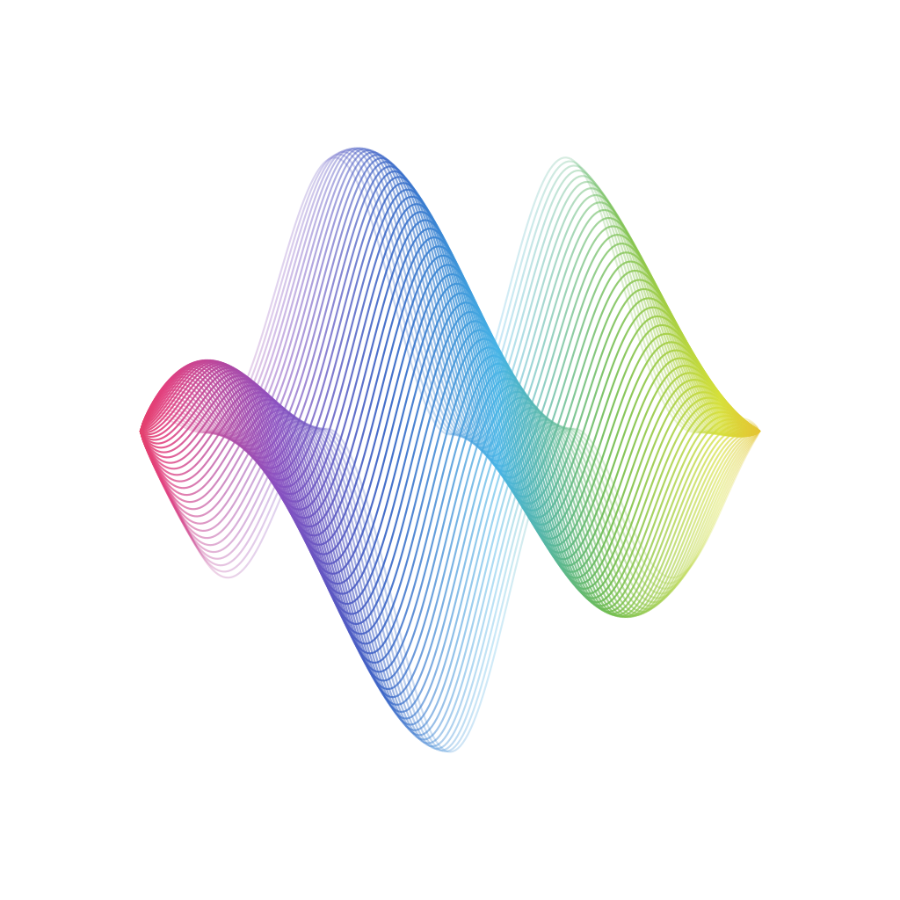

Arranging: music's magician
Arrangement & Production
Teacher: Leo Lee, Pixel Studio
musicallanding@gmail.com
Today's route: dress your song in the right clothes
- Explain what arranging means and the five things to decide before you arrange
- Tell apart the five elements: main groove, secondary groove, lead melody, fills and pads
- Understand how vocals and arrangement relate, and learn to leave room for the voice
- Before the end of class, every group finishes its song's instrumentation and saves it to the planning card
What kind of sound suits your song?
- Each group plays last week's vocal demo and states its final key and tempo
- The other groups describe the song's atmosphere in one word
- The teacher answers questions from last week's exit tickets
The same song with piano is one mood; with electric guitar and drums it's another. Today we decide what your song will wear.
The arranging style you imagine is closest to…?
Arranging is repackaging a song
The arranger's job
Following the song's melody and emotion, decide which instruments play, where they come in and what role they take. Words and music are the skeleton; the arrangement is the flesh and the clothes.
One song, two outfits
Years later, David Tao released a Reimagined version of 〈流沙〉. The melody and lyrics stayed the same, the arrangement was completely renewed, and the song's age changed with it.
Decide five things before you arrange
Where it sits in the record industry
Step four of the eight production stages. Arranging comes after A&R planning, songwriting and choosing a style; only when it's done do you go into the studio.
Placing the melody
First put the lead melody into the beat and chords, confirm the length and sections, then arrange every instrument around it.
Every instrument plays one of these roles
Switch the five elements on and off one by one, and hear what each layer does
Press "Build up gradually" first, adding one element each loop; then switch off a single layer and feel the gap it leaves.
Instrumentation builds up gradually, like getting dressed
Add one layer at a time
The verse wears just a shirt, the pre-chorus adds a jacket, and the chorus wraps on a scarf. Energy and density peak in the chorus.
Pulling back is a kind of power too
Just before the last chorus, the instruments suddenly drop away, leaving only voice and piano, then all come back together, giving the atmosphere more layers.
Arrangement map: set the instrumentation for each section
Lay out section lengths in multiples of four
The rule of four
Every section is at least two bars (eight beats), usually four or eight bars. Listeners' ears are used to counting in fours, so when sections fall on multiples of four, the changes feel most natural.
Open, build, turn, close: 2-4-4-2
When practising arranging: open (intro) two bars, build (theme) four bars, turn (chorus) four bars, close (outro) two bars. Once you're fluent, expand it to 4-8-8-4.
An arrangement's first job: let the voice come through clearly
Make room
When the voice is singing, other instruments step back; when it takes a breath, a fill steps in.
Stay out of its frequencies
Don't cram too many instruments into the middle range where the voice sits. The verse piano is often placed lower or higher than the voice.
Follow the key
The arrangement follows the lead singer's key. If the key changes, every instrument has to be rearranged.
A good vocal decides eighty per cent of a song. However lavish the arrangement, if it covers the lyrics, listeners lose the story.
Three kinds of hook in an arrangement
Emotional hooks
A key change up, pulling back then all in, a sudden stop: listeners' emotions rise and fall with them.
Expressive hooks
A breathy note, a catch in the voice, a harmony, or a bit of improvised humming.
Other sound material
An instrumental motif in the intro, a special sound effect, an ambient recording: the moment it plays, people recognise the song.
Arranging for live shows: the audience is an instrument too
The pre-chorus of 〈新北耶誕城〉
不如這樣吧 讓我們先來培養小小的默契
當我唱到 Merry Xmas 請你們要大聲說出今天的主題
The rules of the interaction are written straight into the lyrics. The second pre-chorus adds the line 「剛剛的默契實在有一點不行」 ("that teamwork wasn't quite there"), inviting the audience to answer even louder.
The five elements
Which statement about the five elements of arranging is wrong?
- Main groove: the instruments that set the groove, such as drums and bass
- Secondary groove: instruments that support the groove, such as piano and guitar
- Lead melody: the song's main melody, such as the voice
- Pads: decorative instruments, such as congas and bongos
What connects two sections and doesn't repeat on a regular pattern?
- Secondary groove
- Fill
- Pad
- Main groove
Ten-minute break. Notice the sounds in the classroom; which could become material?
Listen to four songs and mark the five elements and the hooks
- Which instrument carries the hook in the intro?
- Which instruments are added between the verse and chorus?
- Find a fill, and where the pads come in
Apart from live shows, most music goes through a computer
Sampler
Records real instruments' sounds, including pitch, dynamics, expression and playing technique, then plays them in real time from a MIDI keyboard.
MIDI
Records instructions for "which note, how hard, how long", so you can change the sound or edit notes any time.
Digital audio workstation
Software for recording, arranging and mixing on a computer. Free apps on a phone or tablet are enough to make a demo.
Four levels of recording
| Level | Equipment | Good for |
|---|---|---|
| Bare-bones | Phone recording | Capturing ideas, humming, rehearsals |
| Basic | A phone or computer with an external microphone and headphones | Song demos, class presentations |
| Advanced | An audio interface, a condenser microphone, a digital audio workstation | Contest entries, releasing online |
| Professional | A studio, a recording engineer and a producer | Official release |
The course's final project aims for the "basic" level: a quiet space, a steady distance, and headphones on to hear the backing.
Mixing: shaping the sound, setting the sound stage, organising the tracks
Volume
Adjust each track's volume so the lead melody stands out. Keep every track and the master below 0 dB to avoid clipping.
Pan
Spread instruments to the left and right; voice, bass and kick drum usually sit in the middle, with other instruments fanning out to the sides.
Limiter
The last stop on the master output, capping the maximum volume so your song is loud without distorting.
Once mixed, export it as an audio file for the last of the eight production stages: mastering, so your song sounds good on every kind of speaker and headphones.
Tick your song's instrumentation, then plan what plays in each section
- Choose at least one instrument for each of the five elements
- Write down which instruments play the verse, pre-chorus and chorus
- Design a hook for the intro
Each group takes two minutes to present its song's arrangement plan
| Criteria | Points |
|---|---|
| The five elements are clearly divided | 2 points |
| Builds up gradually, with the most energy in the chorus | 2 points |
| The intro hook is memorable | 1 point |
Main groove, secondary groove, lead melody, fills, pads;
instruments build up gradually,
and when the voice comes in, the others step back.
Before you leave, write down 3-2-1
Next lesson is the final showcase
Lesson 8 is the workshop and final showcase. Within a week, finish your song's demo: vocals plus at least one accompanying instrument.
Practice after class: tap once to tick each item you finish
- Choose a song you love and write down which instrument handles each of the five elements
- Following your arrangement plan, record the song's backing with at least one instrument
- Put on headphones, listen to the backing and record the vocals to finish your demo
- Balance the vocals and backing so the lyrics are clear
- Fill in the Lesson 8 pre-class survey
Lesson 8: Songwriting workshop and final showcase
Edit your songs in class, discuss them together,
then each group presents a whole term's writing
to bring the eight lessons to a close.
Scan the QR code to fill in the Lesson 8 pre-class survey right on the website.